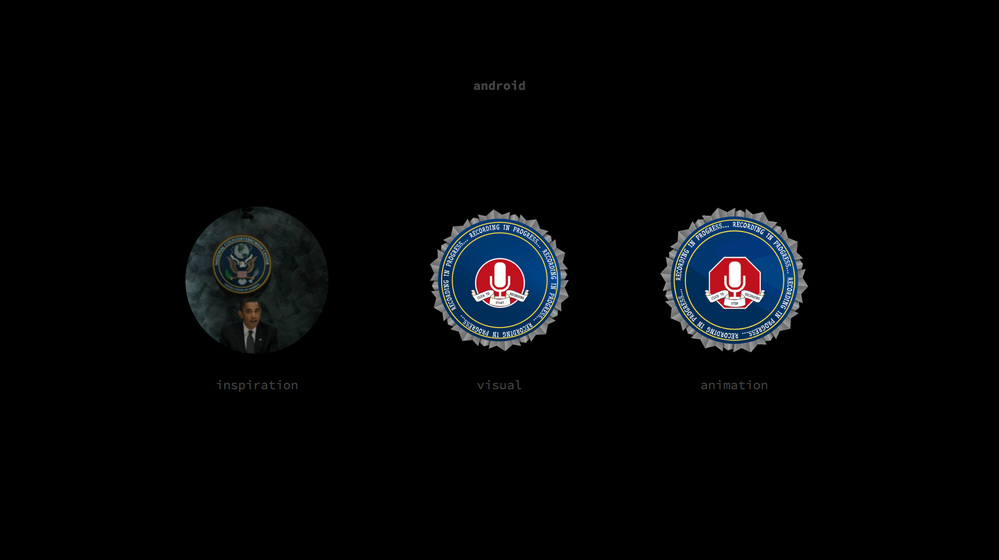
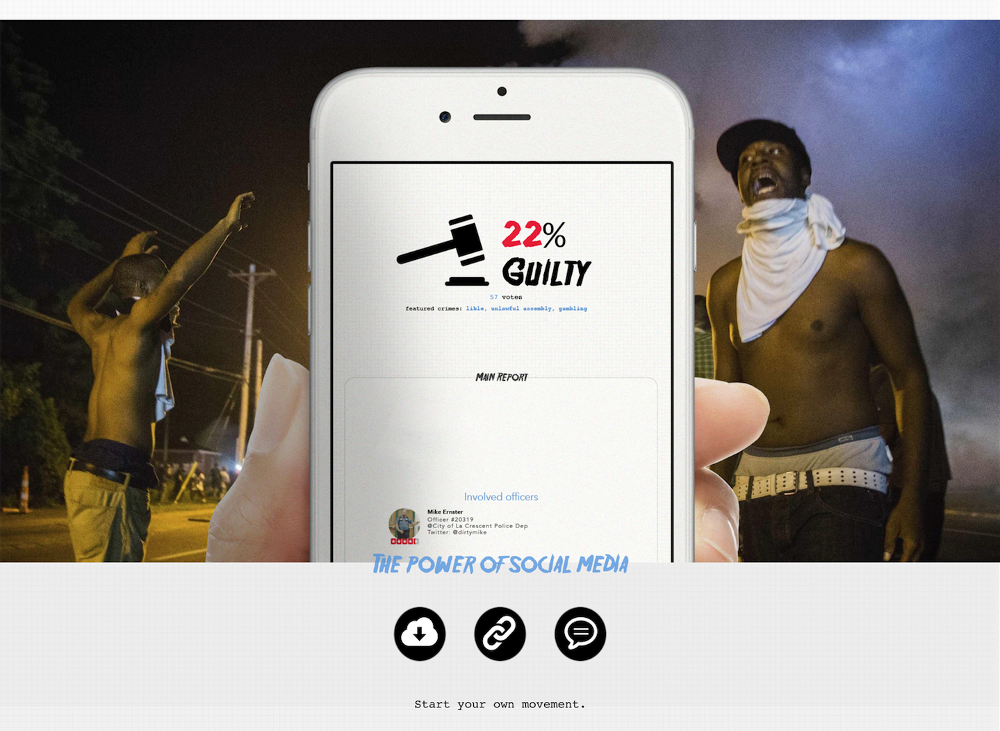

Fedup
It's crazy that in the 21st century law enforcement/legal system still rely heavily on foggy testimony and paper police reports. So we built a complete ecosystem for users to directly document, review and share evidence without having to go through anyone else.
Design considerations
Visually, the goal was to make the android app look like a badge worn by an officer - it goes along with our mission making citizens feel more empowered.
At the same time, we wanted to protect user privacy and allow them to run the app from their pocket. For this reason, we went recording audio instead of recording Video. Video would have also made our technology less usable in conditions with poor lighting.
Unlike our android app, the web component carried a lighter layout intended for use on the desktop. Whether it's the victim organizing an account the day after, lawyers browsing client folders, or public viewers browsing fact-oriented stories, the key was to deisgn a pleasant layout that supports a wide variety of media without dumbing content down.
Update
After deciding to continue this project, we connected with the American Civil Liberties Union and entered an official partnership with them. We also connected with the Harvard Law's Berkman Center. The goal of working with these larger organizations was gain access to more data for our web component.